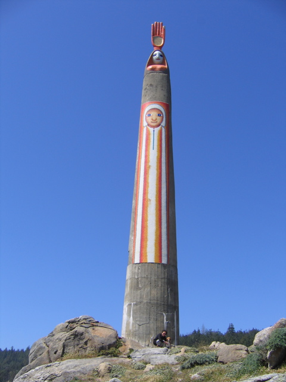

<--Previous
Up
Next-->

The Expanding Universe
This statue by Beniamino Bufano, whose sculptures can be seen all over San Francisco, faces out over the Pacific Ocean behind the Timber Cove Inn on Route 1.